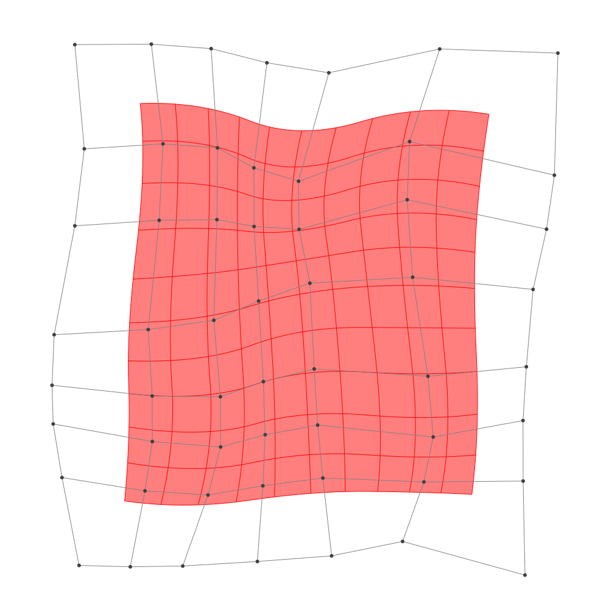

Refinement
BasicBSpline.refinement — FunctionRefinement of B-spline manifold with given B-spline spaces.
julia> p = 2 # degree of polynomial2julia> k = KnotVector(1:8) # knot vectorKnotVector([1.0, 2.0, 3.0, 4.0, 5.0, 6.0, 7.0, 8.0])julia> P = BSplineSpace{p}(k) # B-spline spaceBSplineSpace{2, Float64}(KnotVector([1.0, 2.0, 3.0, 4.0, 5.0, 6.0, 7.0, 8.0]))julia> rand_a = [SVector(rand(), rand()) for i in 1:dim(P), j in 1:dim(P)]5×5 Matrix{StaticArrays.SVector{2, Float64}}: [0.798234, 0.215603] [0.331065, 0.620487] … [0.728844, 0.767303] [0.0920788, 0.180877] [0.963774, 0.0814351] [0.661721, 0.778865] [0.815975, 0.346705] [0.485164, 0.531802] [0.697064, 0.26199] [0.110549, 0.609478] [0.69363, 0.237822] [0.719998, 0.695843] [0.120465, 0.0569253] [0.0694427, 0.630556] [0.660909, 0.627841]julia> a = [SVector(2*i-6.5, 2*j-6.5) for i in 1:dim(P), j in 1:dim(P)] + rand_a # random5×5 Matrix{StaticArrays.SVector{2, Float64}}: [-3.70177, -4.2844] [-4.16894, -1.87951] … [-3.77116, 4.2673] [-2.40792, -4.31912] [-1.53623, -2.41856] [-1.83828, 4.27887] [0.315975, -4.15329] [-0.0148361, -1.9682] [0.197064, 3.76199] [1.61055, -3.89052] [2.19363, -2.26218] [2.22, 4.19584] [3.62047, -4.44307] [3.56944, -1.86944] [4.16091, 4.12784]julia> M = BSplineManifold(a,(P,P)) # Define B-spline manifoldBSplineManifold{2, (2, 2), StaticArrays.SVector{2, Float64}, Tuple{BSplineSpace{2, Float64}, BSplineSpace{2, Float64}}}((BSplineSpace{2, Float64}(KnotVector([1.0, 2.0, 3.0, 4.0, 5.0, 6.0, 7.0, 8.0])), BSplineSpace{2, Float64}(KnotVector([1.0, 2.0, 3.0, 4.0, 5.0, 6.0, 7.0, 8.0]))), StaticArrays.SVector{2, Float64}[[-3.701765811231928, -4.284397119642665] [-4.168935119328701, -1.8795132278699425] … [-3.5885300992383673, 2.2543782944859228] [-3.77115557972886, 4.26730332389644]; [-2.4079211571321673, -4.319123154719615] [-1.5362258668689783, -2.418564876440329] … [-1.5907115491054298, 2.3994190501496404] [-1.838278854900973, 4.278865131438899]; … ; [1.6105488239451224, -3.890522159186373] [2.1936300488625804, -2.2621777868866464] … [1.6384706321097133, 2.4065626238222997] [2.2199978886735083, 4.195843448176638]; [3.6204650230301576, -4.4430747296248105] [3.569442701445787, -1.8694439200897346] … [4.093286192420558, 1.7693883108375903] [4.160908627141162, 4.127841430227826]])
h-refinemnet
Insert additional knots to knot vector.
julia> k₊=(KnotVector(3.3,4.2),KnotVector(3.8,3.2,5.3)) # additional knotvectors(KnotVector([3.3, 4.2]), KnotVector([3.2, 3.8, 5.3]))julia> M_h = refinement(M,k₊=k₊) # refinement of B-spline manifoldBSplineManifold{2, (2, 2), StaticArrays.SVector{2, Float64}, Tuple{BSplineSpace{2, Float64}, BSplineSpace{2, Float64}}}((BSplineSpace{2, Float64}(KnotVector([1.0, 2.0, 3.0, 3.3, 4.0, 4.2, 5.0, 6.0, 7.0, 8.0])), BSplineSpace{2, Float64}(KnotVector([1.0, 2.0, 3.0, 3.2, 3.8, 4.0, 5.0, 5.3, 6.0, 7.0, 8.0]))), StaticArrays.SVector{2, Float64}[[-3.701765811231928, -4.284397119642665] [-3.9820673960899917, -2.841466784579031] … [-3.6159239213119414, 2.5563170488975] [-3.77115557972886, 4.26730332389644]; [-2.8607667860670833, -4.306969042442683] [-2.6189111775647627, -3.0607256966414886] … [-2.323673691692774, 2.637579342637094] [-2.5147857085907335, 4.274818498799038]; … ; [1.6105488239451224, -3.890522159186373] [1.9603975588955973, -2.9135155358065368] … [1.7256997205942826, 2.67495474747545] [2.2199978886735083, 4.195843448176638]; [3.6204650230301576, -4.4430747296248105] [3.5898516300795347, -2.898896243903765] … [4.103429557628648, 2.1231562787461256] [4.160908627141162, 4.127841430227826]])julia> save_png("2dim_h-refinement.png", M_h) # save image

Note that this shape and the last shape are identical.
p-refinemnet
Increase the polynomial degree of B-spline manifold.
julia> p₊=(1,2) # additional degrees(1, 2)julia> M_p = refinement(M,p₊=p₊) # refinement of B-spline manifoldBSplineManifold{2, (3, 4), StaticArrays.SVector{2, Float64}, Tuple{BSplineSpace{3, Float64}, BSplineSpace{4, Float64}}}((BSplineSpace{3, Float64}(KnotVector([1.0, 2.0, 3.0, 3.0, 4.0, 4.0, 5.0, 5.0, 6.0, 6.0, 7.0, 8.0])), BSplineSpace{4, Float64}(KnotVector([1.0, 2.0, 3.0, 3.0, 3.0, 4.0, 4.0, 4.0, 5.0, 5.0, 5.0, 6.0, 6.0, 6.0, 7.0, 8.0]))), StaticArrays.SVector{2, Float64}[[-3.547131337641165, -3.709977386441204] [-3.6691439418262184, -2.549562575012627] … [-3.3039226203932115, 2.7762213882774525] [-3.400647179413878, 3.7715606573059404]; [-2.4614241351813293, -3.8171823454080767] [-2.1371485399130643, -2.8248760718106456] … [-1.9828672245220946, 2.8506687340330545] [-2.1012390586444454, 3.801515020354455]; … ; [2.0648841822510846, -3.536141226299709] [2.303582832501326, -2.643195170380232] … [2.171575672059003, 2.771402623373261] [2.4195138985206346, 3.7134740601367557]; [3.2991443905574704, -3.7469618670527765] [3.3264751919737683, -2.538920332054849] … [3.7224685752923676, 2.441481797222772] [3.7991051944729355, 3.573277332331565]])julia> save_png("2dim_p-refinement.png", M_p) # save image

Note that this shape and the last shape are identical.